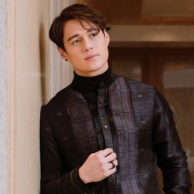
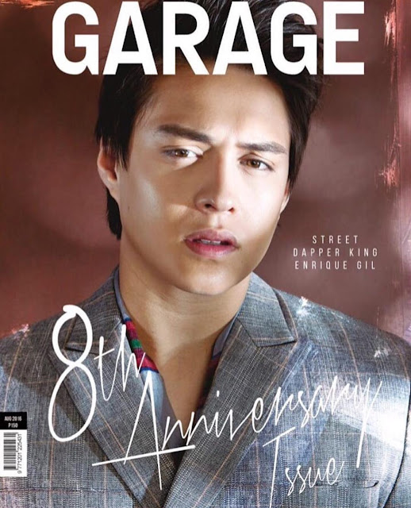

Enrique Mari Bacay Gil V
Enrique Mari Bacay Gil V was born on March 30, 1992, in Cebu City, Philippines.[6][7][8] He is the second son of Enrique Amadeo Gil III and Barbara Anne Bacay.[2][7] He has an older brother named Enrique Javier IV[7][9] and a younger sister named Diandra Frances.[7][8][9] His parents used to work as flight crew for Philippine Airlines. Gil is a relative of actor Dingdong Dantes.[10]
Gil finished grade school at the Montessori De Manila in March 2004, a private institute inside the BF Executive Village in Las Piñas, and secondary school at the Manresa School in Parañaque in March 2008.[11][12] He went to San Beda College Alabang to pursue a degree in Information Technology, but put his studies on hold to focus on his acting career. In 2016, he started attending a Business Management Program[3][4] at the Southville International School[3][4] in BF International, Las Piñas.[3][4]
Read More
2008–2011: Career beginnings
Gil started acting in 2008. He was 16 years old when his mother made him join My Talent summer workshops headed by Trumpets Playshop founder and STAGES president Audie Gemora, to overcome his shyness. They eventually pushed him to audition for Star Magic.[13] Before being introduced to the media as a member of the Star Magic Circle Batch 16, he appeared in a series of TV commercials, including a Lewis and Pearl's advertisement, alongside Coleen Garcia.[14] He landed his first television role in the action-drama series Pieta where he played the character Harold.[11] Before Pieta, he had a cameo appearance in I Love Betty La Fea as one of the "Eco-models.
In 2009, during the taping of Pieta, his mother convinced him to audition for the sitcom George and Cecil. As soon as head writer and director Jose Javier Reyes saw Gil, he immediately cast him to be on the show.[11] Later he was cast in the indie film Pitas as a brother of the lead character played by Kristel Moreno.[15]
In 2010, he co-starred in the indie war film Diego and His Brothers.[15][16] He joined ASAP XV as one of Star Magic's "Gigger Boys" in April,[17] and in May, co-starred in the teleserye Rosalka, in which he played Andrew. He was originally set to appear in Kokey @ Ako,[18] but his character was written off in favor of Jason Francisco. In October, he was given the role of Joco, the younger brother of Paolo Barredo (Gerald Anderson), in the film Till My Heartaches End.[19] He got his first hosting stint in the ABS-CBN teen variety show Shoutout!. This was revamped and renamed to Shoutout!: Level Up, but the show was eventually cancelled due to poor ratings.[20]
Read More

2012–2015: Rising popularity and breakthrough
In 2012, he starred as Dasho Jao Rinpoche in Princess and I, which became one of the most popular shows on ABS-CBN. He was also cast in the film The Reunion, a Filipino teen romantic comedy film directed by Frasco Mortiz.[26] He was included in Amorosa, his first horror film.[27] Later in the year, he appeared in The Strangers, one of the official entries for the 38th Metro Manila Film Festival. This was his first MMFF film.[28]
In February 2013, he was featured in Myrtle Sarrosa's "Mr. Kupido" music video. He also portrayed Senate President Juan Ponce Enrile on Maalaala Mo Kaya.[29] Following this, he appeared in a number of new projects such as Muling Buksan ang Puso series, alongside Julia Montes and Enchong Dee.
In October 2013, he starred in the film She's the One with Bea Alonzo and Dingdong Dantes, which earned him a Best Supporting Actor nomination in the FAMAS Awards. Many considered this his breakthrough film as an actor.[30][31] The film earned 12 million pesos on its first day and grossed 135 million pesos on its fifth week.[32]
Read More